Development of Air Intake System
The aim of the project is to perform different set of calculations to design the air intake manifold suitable for 200cc KTM engine, to get the best power and torque output from the engine in mid RPM range. The engine produce majority of its power output at very high RPM, the design achieved through this project is such that it performs best at mid-range which helps in increasing the drive ability of the vehicle, as the engine will not need to be revved hard to accelerate.
The design is first prepared on CAD modeling software, to further optimize the design analysis of the intake manifold was done. On the basis of the results of the analysis minor adjustments were made in the dimensions and the geometry of the designs. Once the design was finalized, evaluation of the design characteristics was done using real time testing. The results obtained through testing procedures are compared with the stock intake manifold for the conclusions.
Concept used for the design
Two different concepts are used for the designing of the Intake system. which are as follows-
Pressure Wave Tunning-
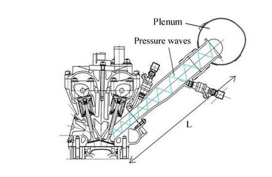One way to get more amount of air-fuel mixture into the engine is tuning the lengths of the pipes of the intake manifold. When the intake valve is opened, air is being sucked in to the engine rapidly. Now when the intake valve closes suddenly, the air slams to a stop and stacks up on itself and leads to forming an area of high pressure. This high-pressure wave now propagates in opposite direction to the cylinder and when this high-pressure wave reaches at the end of the intake runner, where the runner connects to the intake manifold, the pressure wave bounces back down the intake runner. If the intake runner length is just the right length then the high pressure wave arrives back to the intake valve just as it opens for the next cycle. This extra pressure helps more air-fuel mixture in the cylinder which increases the performance of engine.
Helmholtz resonator-
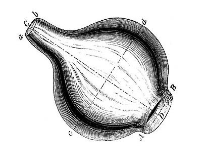The purpose of a resonator when used with an air intake system is to increase the volumetric efficiency of the engine. Any hollow container of any size with an opening can be termed as a resonator, Helmholtz resonator is a spherical shaped container with an opening, the hollow area in the container is filled with air, tends to have springiness effect. When the air enters the resonator from one opening due to already present air inside the resonator a pressure is created, and the air tends to normalize the pressure, in order to do so the a lump of air is pushed out, which also creates a suction and new air enters and the cycles keep on repeating, entering and exiting of the air have a particular frequency which depends on the shape and volume of the resonator. When attached with the runner of the intake the air coming from the runner gets into the resonator and due to spring effect of the inside present air it is pushed back again towards the same path with increment in the pressure.
3D CAD design
Two diffeerent types of design were made 1st design to perform the CFD analysis and 2nd design to 3D print the intake system.
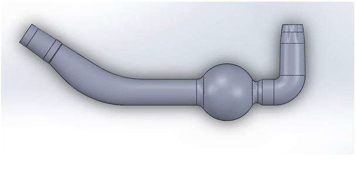 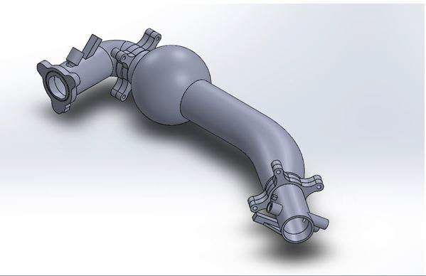Initially the hollow pathway for the flow of air was made using sketch, extrude and loft features of the solid-works software. Whole part was made as a solid, first to perform the analysis and to make minor optimization and changes in the dimension of the runner length. Once we got the best result from the analysis the final model (which has to be manufactured and would be taken by the 3D printer) was made with all the mounting for sensors and engine placement.
Analysis
To obtain an efficient design that did not create any obstruction in the flow and performed the function wanted, analyses of the design was done using Computational Fluid Dynamics (CFD). Before moving on to any analytic software the input values are required, that need to be input into the software to perform an accurate transient analysis within a complete cycle of the engine. To do that data log was setup-ed in the custom ECU to record the MAP sensor values with respect to the RPM and the value of the throttle position sensor.
Meshing-
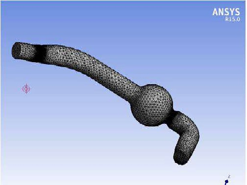The efficiency of the meshing greatly influences the accuracy of the results of the analysis. Thus the grid pattern used for meshing is very important to give proper results. Hexahedral mesh was used because it is more accurate in areas with sharp curvatures. This mesh was imposed on the design with smaller elements near sharper curvatures.
Boundry condition-
All the faces of the design has to be assigned as openings, walls, inlets or outlets etc. for the system to process the behaviour of each boundary. Here, the inlet boundary is facing the atmosphere as this is a naturally aspirated engine. On the other end, the outlet opening is fed the data that was collected from the MAP sensor. To do this, a function is created into which the data is imported from an external file. That function is attached to an expression with respect to the time. This expression is related to the outlet boundary condition that will simulate the suction of the piston as each time step is processed.
Analysis results-
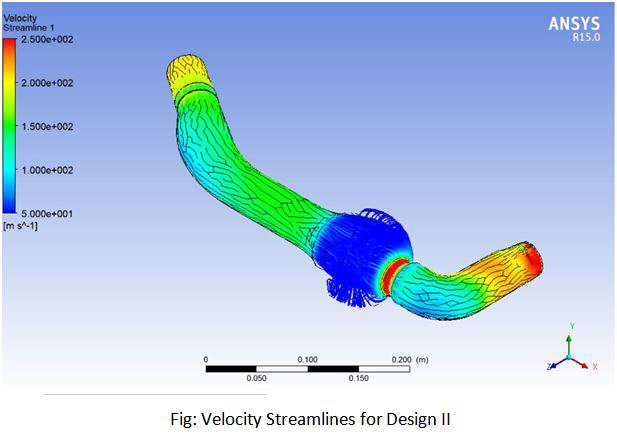 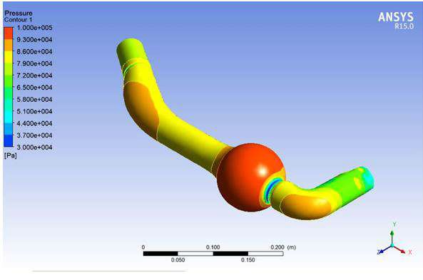Several different designs were made and altered, to find the best design according to the results obtained from the analysis. In the final design the fillet was added where the neck of the resonator is meeting the resonator itself. The fillet has a radius of 15mm. Although the modification was very small a significant increase in the pressure inside the resonator was seen. Also the pressure drop in the runner is lesser while still maintaining an increase in the velocity of the fluid.
3D printing
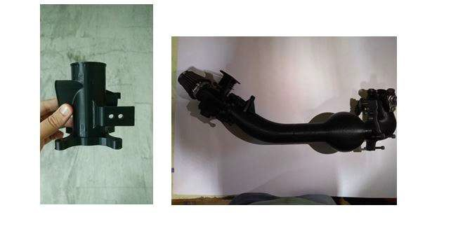Once the design was finalized the design prototype manufacturing was needed to test the design in real time condition with the engine at different engine speed. 3D printing technology was used to print the design. The material ABS was used to print the part based on the strength and manufacturing cost.
Results
Due to the increment in the mass flow rate of the air because of the design intake, the previous throttle positioning and fuel metering values were incorrect as the air fuel ratio changed. For the proper functioning of the engine with correct air-fuel ratio ECU was remapped. Once the ECU was remapped the intake system with the engine was tested using a inhouse made Rope brake dynamometer.
Using the Rope brake dynamometer various engine performance criteria's were evaluated which can be seen in below-
Torque-
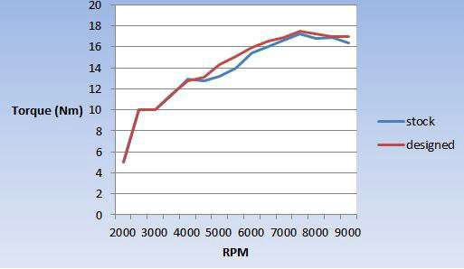The torque value for the design intake is nearly same at the lower RPM and the torque value of designed intake at mid-range RPM is increasing with respect to the torque value of stock intake, which is the main target RPM range
Mass flow rate-
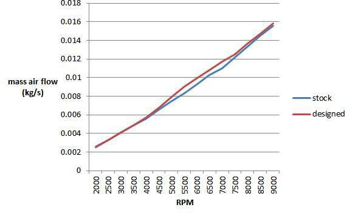The main target is mid-range RPM of the engine and it is clearly seen from the graph that there is maximum increment in the mass air flow rate of designed intake as compared to stock intake between the 5000 to 6500 RPM of the engine which is our main target range of RPM.
Brake mean effective pressure (Bmep)-
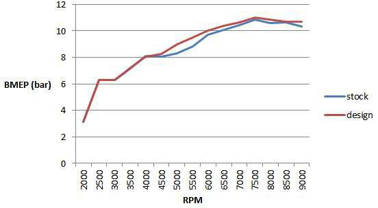In this comparison It can be observed that at the midrange RPM there is incensement of brake mean effective pressure of designed intake as compared to the stock and also at the higher RPM the value of designed intake is slightly increasing as compared to stock intake.
Volumetric efficiency-
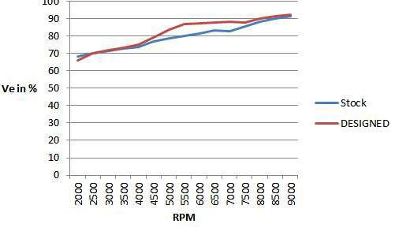It can be clearly seen from the graph that there is maximum increment of the volumetric efficiency of designed intake as compared to stock intake between the 5000 to 6500 RPM of the engine. It can also be observed that at the higher RPM range also the volumetric efficiency of designed intake is slightly higher than the stock intake.
Looking at the data collected from simulation and testing procedures. A peak increase in volumteric efficiency by 6.1 percentage at the desired RPM range i.e 5000-6000RPM and also an increase of torque by 1.1 Nm in the same range is seen. The increase in the torque in the mid range has increased the drivability of the car nullifying the reason to keep the engine in the higher RPM for acceleration. This also helps in increasing the fuel efficiency of the vehicle.